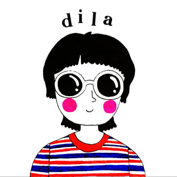

[Verse 1]
Takpan na lang ang 'yong bibig ‘Di nakakatulong (Nakakatulong) Sawa na 'ko sa parinig O, lapitan mo 'ko[Pre-Chorus]
O, alam mo ba? Ang tawag sa Bulong nanggugulo Sa iyong pagtulog? ‘Wag ka nang Mag-aksaya Ng luha sa hilaw na hangal[Chorus]
(One, two) Ang 'di mapakaling Dila Hindi basta-basta Umasta May kasama pang sita Diba? Walang nagagawang Tama[Post-Chorus]
Ang 'di mapakali Ang 'di mapakaling Dila[Verse 2]
Pagkabigay ng 'yong bilin ‘Di ko yan gagawin Hindi mo 'ko masisisi Ang kulit mo kasi Oh oh 'wag ka nang mag-alinlangan Ayoko ng ganiyan (Ayoko rin sa'yo) Bigyan mo 'ko ng kaibigan Kailangan ko raw 'yan[Pre-Chorus]
O alam mo ba? Ang tawag sa Bulong nanggugulo Sa iyong pag-tulog ‘Wag ka nang Mag-aksaya Ng luha sa hilaw na hangal[Chorus]
Ang 'di mapakaling Dila Hindi basta-basta Umasta May kasama pang sita Diba? Walang nagagawang Tama [Post-Chorus] Ang 'di mapakali Ang 'di mapakaling Dila[Bridge]
Akala ko ba Kaibigan kita? Ba't biglang nawala ka? Natirang mag-isa[Chorus]
Ang 'di mapakaling Dila Hindi basta-basta Umasta May kasama pang sita Diba? Walang nagagawang Tama[Outro]
Ang 'di mapakali Ang 'di mapakaling Dila Ang 'di mapakaling Dila Ang 'di mapakaling Dila